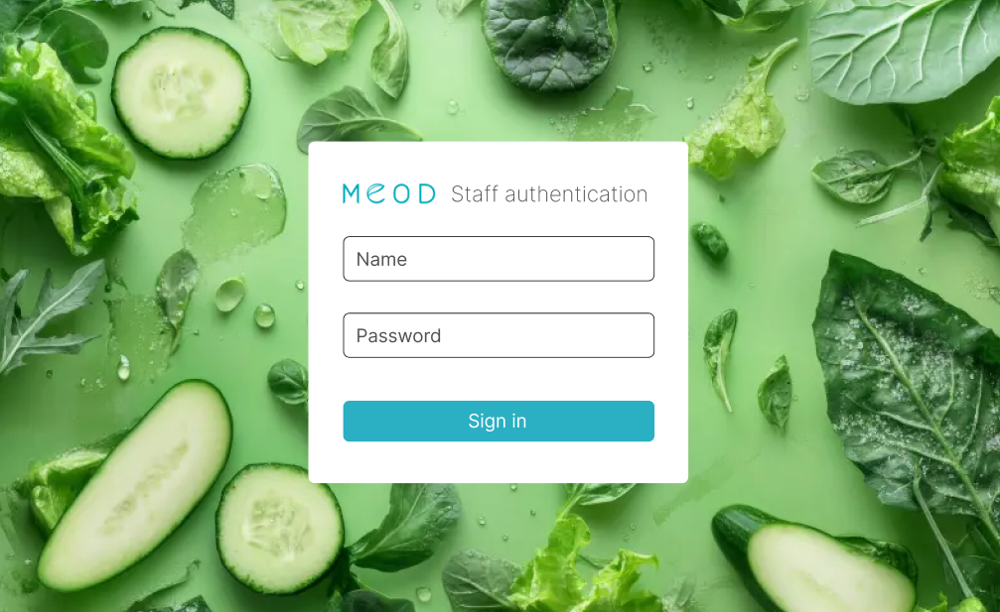
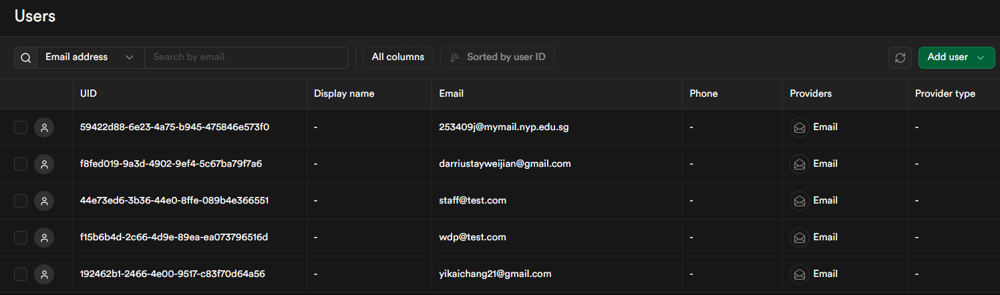
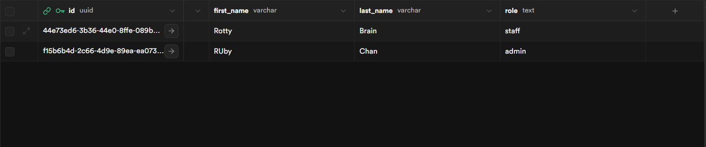
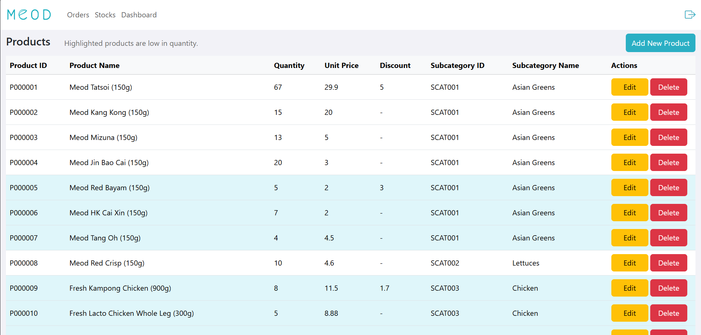

The primary focus of this website is backend functionality.
Supabase database and authentication are used to provide fundamental functionalities to this web app.
Python is used to create APIs to supabase, to be used by JavaScript.
This project is an e-commerce web app for Meod Farm.
The target users of this website are Meod Farm staff and managers.
The purpose of this website is to provide technological solutions to Meod Farm's business operations.
The color theme used in this website is white and cyan colors to match Meod Farm logo.
This project includes a total of three pages:
This is a full-stack website. Everything here is functional.
For context, Meod Farm is a business that sells vegetables and meat through a e-commerce platform.
Authentication Page
The authentication page is designed to check check user credentials against existing accounts
from supabase authentication system. If bypassed, the user is granted access based on the 'Staff' table of supabase.

This is the UI of the authentication page.
Strictly, no user account is allowed for security purposes.
The credentials users input are passed to supabase using parameterized statements queries to prevent SQL injection attacks.

This is the authentication system of supabase.
User credentials are checked against this table to authenticate users.
Passwords are handled by supabase. Not even admins have access to the them to minimize damage if compromised.
Note: The data in the image are just test data. They are not actual staff data.

To provide role-based authentication, the roles of users along with their personal information
are stored in a separate staff table.
In other words, authentication occurs twice before granting access to the system.
Even if users could bypass the supabase authentication system,
they won't get access to the system unless their IDs are not in the staff table.
Dashboard
This page is accessible only to admins and is used to gain insights into business operations.
The key feature of this page is the drill down feature of the visuals, which can be drilled from monthly view
all the way down to individual orders.
The video features the drill down feature of the visuals.
This drill down feature give invaluable business insights as it can visualise all data to the most detailed point.
It also propagates the filters to the other visuals as well.
Order Preparation Page
The purpose of this page is to assist the order preparation operations of Meod Farm.
This page is designed in such a way that users can search by order number, order id, filter by status, and time.
The search bar is placed at the very top to imply that the search overrides the filters.
The time filter is placed below the search and status filter, implying that it does not overriide the latter two.
When preparing the orders, the staff need to click on the orders to modify their status.
This search and filter feature can save both time and effort when staff are required to find a specific order.
Inventory Management Page
This page is meant to assist Meod Farm in managing their inventory.
It allows for sorting products, adding new products, editing, and deleting existiing products.
Generative AI is used to auto-generate product name and description as well as checking if the product image and name matches.

Low-quantity products are highlighted to capture the attention of the users checking the inventory.
"Add new product" button is placed at the very top to imply that it does not associate with any exisiting products.
Meanwhile, the edit and delete buttons are placed in the same row as their respective products.
This video demonstrates product sorting, creating new product, the use of Generative AI to generate product name and description,
editing, and deleting a product.